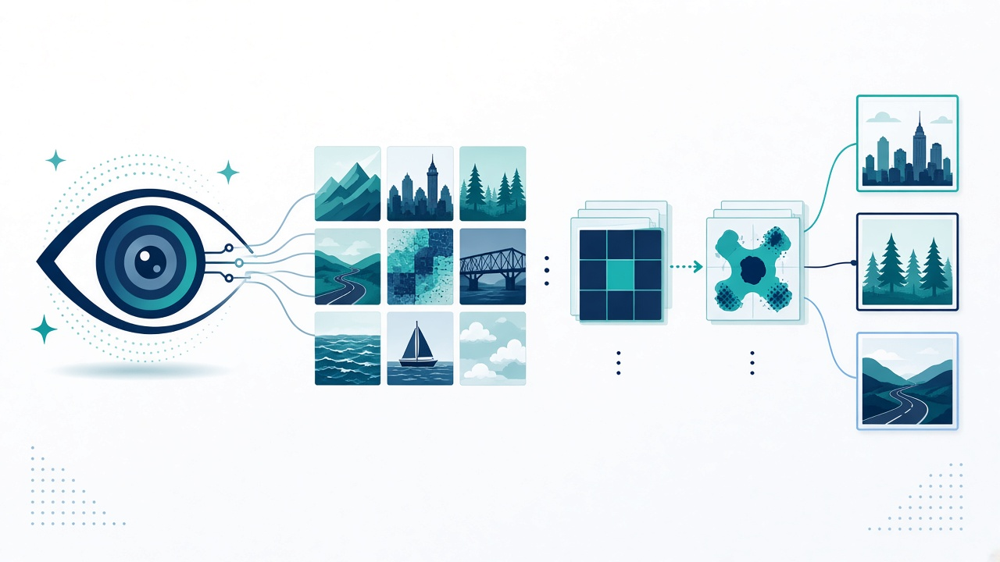
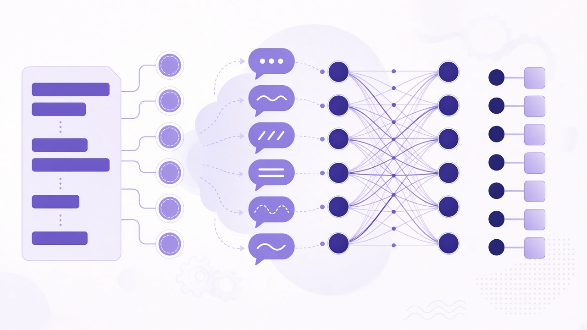

Tabular Data
Structured rows and columns for prediction, ranking, clustering, and dimensionality reduction.
7 algorithmsA structured visual framework comparing 10 foundational and modern algorithms across Supervised and Unsupervised paradigms within Tabular Data, Computer Vision, NLP, and Generative AI.
Algorithms are organized across the four major AI/ML domains emphasized in this portfolio artifact
Structured rows and columns for prediction, ranking, clustering, and dimensionality reduction.
7 algorithms
Spatial pattern recognition over pixels for detection, screening, and visual inspection.
1 algorithm family
Contextual language understanding for classification, search, and entity extraction.
1 algorithm familyDistribution learning that creates new text, images, and multimodal artifacts.
1 algorithm familyEvery algorithm below is labeled Supervised or Unsupervised so relationships across paradigms stay clear
Learns an input-to-output mapping f(x) → y using ground-truth labels for prediction and classification.
Discovers latent structure, clusters, compressed manifolds, or probability distributions P(x) without manual labels.
Each card includes algorithm type, application domain, a brief explanation, example use cases, and how the model relates to or differs from others